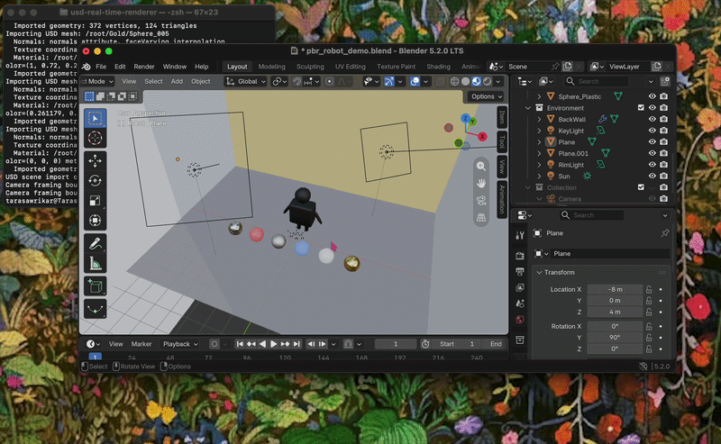
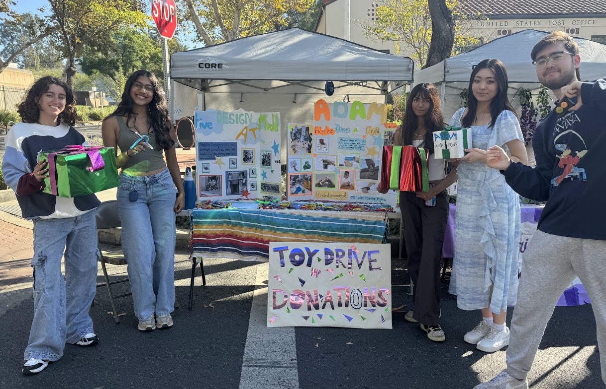

Open each GitHub repository for implementation details.

01 — GRAPHICS ENGINEERING · 2026
Physically Based OpenUSD Renderer
An individual C++17 renderer that imports Blender-authored OpenUSD scenes and reconstructs geometry, hierarchy, cameras, lights, and materials for interactive OpenGL rendering.
Cook–Torrance BRDF using GGX, Smith geometry, and Schlick Fresnel
Recursive USD traversal with hierarchical transform propagation
An individual Unity 6 editor extension that scans textures, materials, and prefabs; groups actionable findings; supports selected quick fixes; and exports CSV reports.
Developed production frontend features for interactive quantum-simulation results, using TypeScript, WebAssembly, and JSON scientific data to render molecular structures and orbitals.
Led the implementation of Vitest screenshot-testing infrastructure, establishing visual-regression coverage across the frontend; the framework was merged and adopted in the production repository.
Authored component and integration tests for complex scientific workflows while contributing approximately 200 GitHub contributions across the production codebase.
ReactTypeScriptVitestWebAssembly
Jan 2026–PresentHarvey Mudd
Student Researcher FICUS Lab
Apply machine learning, Python data analysis, and quantitative modeling to atmospheric and environmental research. My work spans terpene emissions, atmospheric chemistry, field data collection, and computational studies of how plants interact with air quality and climate.
For my independent study, I analyzed eddy-covariance CO₂ flux and rainfall data from coastal sage scrub to identify short-lived rainfall-triggered respiration pulses known as the Birch Effect. I presented the results in a research poster, including the limits imposed by rain-related sensor noise and a small number of usable storm events.
Leadership, Engineering & Community Harvey Mudd College
Lead and support student organizations at the intersection of accessibility, engineering, mentorship, outreach, and community building.

Adaptive Design at Mudd
Adaptive Design at Mudd — Leadership Team & Pilgrim Place LiaisonAdapt products to increase accessibility for people with disabilities and coordinate the team’s community partnership with Pilgrim Place.
Harvey Mudd Racing — TreasurerSupport the design and construction of an internal-combustion Formula SAE car for competition.
Gender Equity in Math — Leadership TeamBuild mentorship, community, and outreach for underrepresented genders in mathematics.
Science Day — Leadership TeamCreate hands-on STEM activities through Science Bus to inspire curiosity in local communities.
APISPAM — MentorBuild community and advocate for Asian and Pacific Islander students through mentorship and campus initiatives.
About
Where engineering and visual storytelling meet.
I’m a Computer Science and Mathematics student at Harvey Mudd College interested in graphics programming, rendering, production pipelines, and developer tools. I build systems that make complex workflows clearer and more useful for artists.
Outside of code, I paint, watch movies, play Minesweeper, and work on sustainability and accessibility projects.